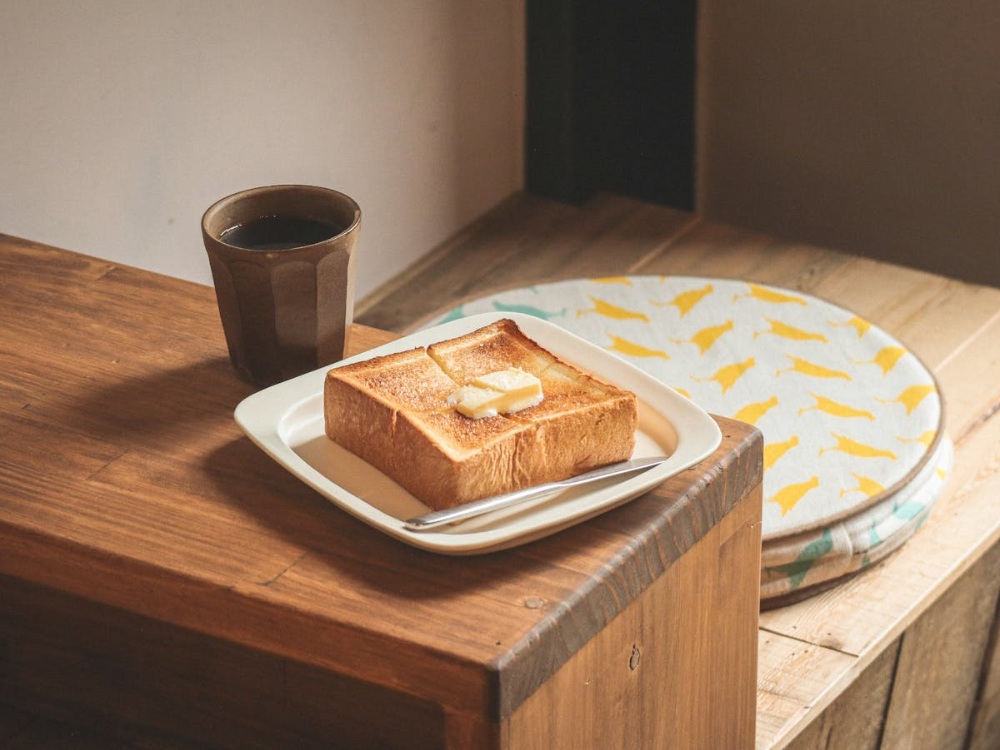
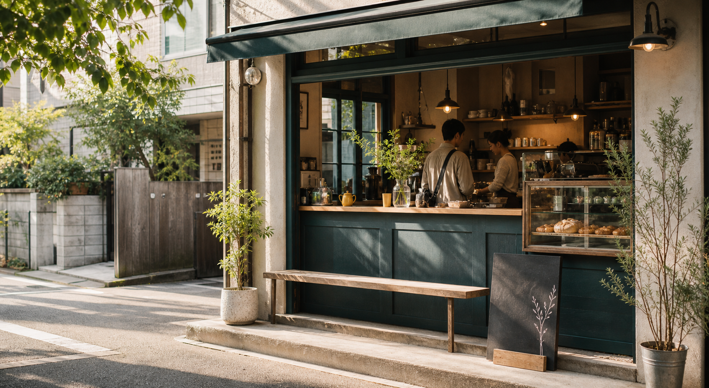
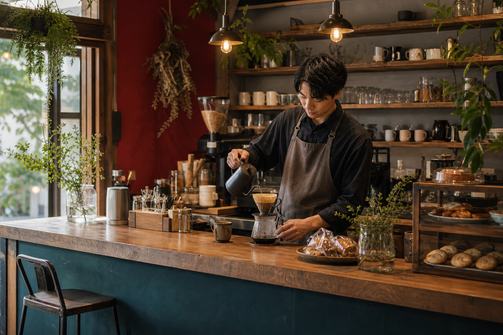
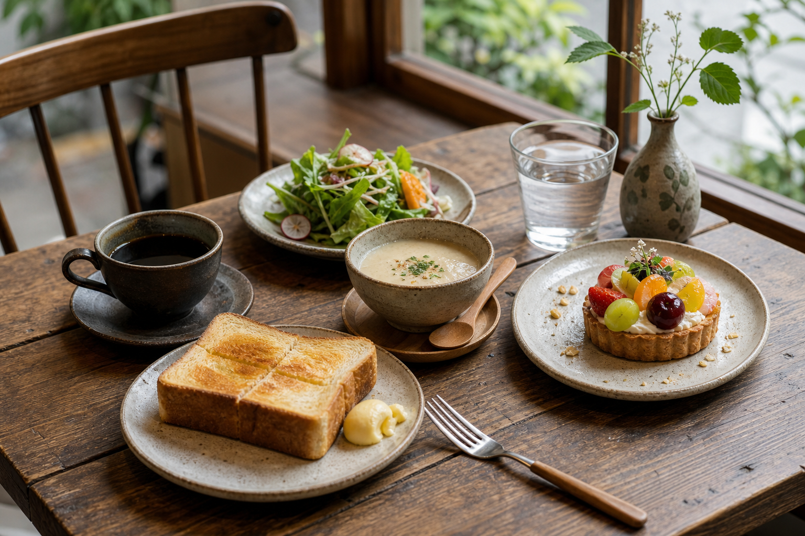

厚切りバタートースト
自家製ジャム、季節のスープ、ドリップコーヒー付き。
950円
Yoyogi Uehara
Coffee & Bake
Today
Our story
MADOBAは、代々木上原の住宅街にある小さなカフェです。朝はトーストとコーヒー、昼はスープとサラダ、午後は季節のタルト。急がない時間を、ふだんの一日の中に置ける場所を目指しています。
豆は週替わりで2種類。焼き菓子は店内で少しずつ焼いています。席数は多くありませんが、窓辺の席、ひとり席、短い打ち合わせにも使えるテーブル席をご用意しています。

Coffee counter
豆の個性に合わせて、湯温と抽出時間を変えています。迷ったら、酸味が軽いもの、苦味がしっかりしたもの、ミルクに合うものなど、気分に合わせてお声がけください。
Seasonal plate
果物や野菜の入荷に合わせて、タルトやスープは少しずつ変わります。売り切れ次第終了のものもあるため、取り置きはお電話でご相談ください。
今週のお知らせを見る
News & calendar
マフィン、スコーン、クッキーを通常より多めに焼きます。
19:00まで営業。軽いワインとチーズケーキをご用意します。
店頭でお出ししている深煎りブレンドを100gから販売します。
Take out
コーヒー、ラテ、季節のソーダ
スコーン、マフィン、クッキー
小さな詰め合わせは前日までにご相談ください
Shop info
Good coffee, small bake, quiet window.